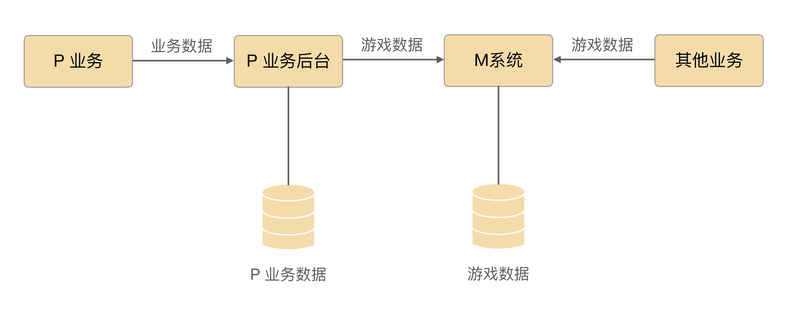

- 00 开篇词 照着做，你也能成为架构师！.md.html
- 01 架构到底是指什么？.md.html
- 02 架构设计的历史背景.md.html
- 03 架构设计的目的.md.html
- 04 复杂度来源：高性能.md.html
- 05 复杂度来源：高可用.md.html
- 06 复杂度来源：可扩展性.md.html
- 07 复杂度来源：低成本、安全、规模.md.html
- 08 架构设计三原则.md.html
- 09 架构设计原则案例.md.html
- 10 架构设计流程：识别复杂度.md.html
- 11 架构设计流程：设计备选方案.md.html
- 12 架构设计流程：评估和选择备选方案.md.html
- 13 架构设计流程：详细方案设计.md.html
- 14 高性能数据库集群：读写分离.md.html
- 15 高性能数据库集群：分库分表.md.html
- 16 高性能NoSQL.md.html
- 17 高性能缓存架构.md.html
- 18 单服务器高性能模式：PPC与TPC.md.html
- 19 单服务器高性能模式：Reactor与Proactor.md.html
- 20 高性能负载均衡：分类及架构.md.html
- 21 高性能负载均衡：算法.md.html
- 22 想成为架构师，你必须知道CAP理论.md.html
- 23 想成为架构师，你必须掌握的CAP细节.md.html
- 24 FMEA方法，排除架构可用性隐患的利器.md.html
- 25 高可用存储架构：双机架构.md.html
- 26 高可用存储架构：集群和分区.md.html
- 27 如何设计计算高可用架构？.md.html
- 28 业务高可用的保障：异地多活架构.md.html
- 29 异地多活设计4大技巧.md.html
- 30 异地多活设计4步走.md.html
- 31 如何应对接口级的故障？.md.html
- 32 可扩展架构的基本思想和模式.md.html
- 33 传统的可扩展架构模式：分层架构和SOA.md.html
- 34 深入理解微服务架构：银弹 or 焦油坑？.md.html
- 35 微服务架构最佳实践 - 方法篇.md.html
- 36 微服务架构最佳实践 - 基础设施篇.md.html
- 37 微内核架构详解.md.html
- 38 架构师应该如何判断技术演进的方向？.md.html
- 39 互联网技术演进的模式.md.html
- 40 互联网架构模板：存储层技术.md.html
- 41 互联网架构模板：开发层和服务层技术.md.html
- 42 互联网架构模板：网络层技术.md.html
- 43 互联网架构模板：用户层和业务层技术.md.html
- 44 互联网架构模板：平台技术.md.html
- 45 架构重构内功心法第一式：有的放矢.md.html
- 46 架构重构内功心法第二式：合纵连横.md.html
- 47 架构重构内功心法第三式：运筹帷幄.md.html
- 48 再谈开源项目：如何选择、使用以及二次开发？.md.html
- 49 谈谈App架构的演进.md.html
- 50 架构实战：架构设计文档模板.md.html
- 51 如何画出优秀的软件系统架构图？.md.html
- 加餐｜业务架构实战营开营了.md.html
- 加餐｜单服务器高性能模式性能对比.md.html
- 加餐｜扒一扒中台皇帝的外衣.md.html
- 如何高效地学习开源项目 华仔，放学别走！ 第3期.md.html
- 新书首发 《从零开始学架构》.md.html
- 架构专栏特别放送 华仔，放学别走！ 第2期.md.html
- 架构专栏特别放送 华仔，放学别走！第1期.md.html
- 架构师必读书单 华仔，放学别走！ 第5期.md.html
- 架构师成长之路 华仔，放学别走！ 第4期.md.html
- 结束语 坚持，成就你的技术梦想.md.html
- 捐赠
45 架构重构内功心法第一式：有的放矢
在[专栏第8期]“架构设计三原则”中的演化原则部分，我提到了系统的架构是不断演化的，少部分架构演化可能需要推倒重来进行重写，但绝大部分的架构演化都是通过架构重构来实现的。相比全新的架构设计来说，架构重构对架构师的要求更高，主要体现在：
- 业务已经上线，不能停下来
架构重构时，业务已经上线运行了，重构既需要尽量保证业务继续往前发展，又要完成架构调整，这就好比“给飞行中的波音747换引擎”；而如果是新设计架构，业务还没有上线，则即使做砸了对业务也不会有太大影响。
- 关联方众多，牵一发动全身
架构重构涉及的业务关联方很多，不同关联方的资源投入程度、业务发展速度、对架构痛点的敏感度等有很大差异，如何尽量减少对关联方的影响，或者协调关联方统一行动，是一项很大的挑战；而如果是新设计架构，则在新架构上线前，对关联方没有影响。
- 旧架构的约束
架构重构需要在旧的架构基础上进行，这是一个很强的约束，会限制架构师的技术选择范围；而如果是新设计架构，则架构师的技术选择余地大得多。
即使是我们决定推倒到重来，完全抛弃旧的架构而去设计新的架构，新架构也会受到旧架构的约束和影响，因为业务在旧架构上产生的数据是不能推倒重来的，新架构必须考虑如何将旧架构产生的数据转换过来。
因此，架构重构对架构师的综合能力要求非常高，业务上要求架构师能够说服产品经理暂缓甚至暂停业务来进行架构重构；团队上需要架构师能够与其他团队达成一致的架构重构计划和步骤；技术上需要架构师给出让技术团队认可的架构重构方案。
总之，架构重构需要架构师既要说得动老板，也要镇得住同事；既要技术攻关，又要协调资源；既要保证业务正常发展，又要在指定时间内完成目标……总之就是十八般武艺要样样精通。
说了那么多架构重构的难度，千万不要被困难所吓倒，架构师正是需要在原来一团乱麻中找到线索，然后重新穿针引线，帮助业务进一步腾飞发展。接下来我将分3期传授我的架构重构内功心法，今天先来看第一式：有的放矢。
通常情况下，当系统架构不满足业务的发展时，其表现形式是系统不断出现各种问题，轻微一点的如系统响应慢、数据错误、某些用户访问失败等，严重的可能是宕机、数据库瘫痪、数据丢失等，或者系统的开发效率很低。开始的时候，技术团队可能只针对具体的问题去解决，解决一个算一个，但如果持续时间较长，例如持续了半年甚至一年情况都不见好转，此时可能有人想到了系统的架构是否存在问题，讨论是否是因为架构原因导致了各种问题。一旦确定需要进行架构重构，就会由架构师牵头来进行架构重构的分析。
当架构师真正开始进行架构重构分析时，就会发现自己好像进了一个迷雾森林，到处都是问题，每个问题都需要解决，不知道出路在哪里，感觉如果要解决所有这些问题，架构重构其实也无能为力。有的架构师一上来搜集了系统当前存在的问题，然后汇总成一个100行的Excel表格，看到这样一个表格就懵了：这么多问题，要到猴年马月才能全部解决完啊？
期望通过架构重构来解决所有问题当然是不现实的，所以架构师的首要任务是从一大堆纷繁复杂的问题中识别出真正要通过架构重构来解决的问题，集中力量快速解决，而不是想着通过架构重构来解决所有的问题。否则就会陷入人少事多头绪乱的处境，团队累死累活弄个大半年，最后发现好像什么都做了，但每个问题都依然存在。尤其是对于刚接手一个新系统的架构师或者技术主管来说，一定要控制住“新官上任三把火”的冲动，避免摊大饼式或者运动式的重构和优化。
我们来看几个具体的重构案例。
1.后台系统重构：解决不合理的耦合
M系统是一个后台管理系统，负责管理所有游戏相关的数据，重构的主要原因是因为系统耦合了P业务独有的数据和所有业务公用的数据，导致可扩展性比较差。其大概架构如下图所示：

举一个简单的例子：数据库中的某张表，一部分字段是所有业务公用的“游戏数据”，一部分字段是P业务系统“独有的数据”，开发时如果要改这张表，代码和逻辑都很复杂，改起来效率很低。
针对M系统存在的问题，重构目标就是将游戏数据和业务数据拆分，解开两者的耦合，使得两个系统都能够独立快速发展。重构的方案如下图所示：

重构后的效果非常明显，重构后的M系统和P业务后台系统每月上线版本数是重构前的4倍！
2.游戏接入系统重构：解决全局单点的可用性问题
S系统是游戏接入的核心系统，一旦S系统故障，大量游戏玩家就不能登录游戏。而S系统并不具备多中心的能力，一旦主机房宕机，整个S系统业务就不可用了。其大概架构如下图所示，可以看出数据库主库是全局单点，一旦数据库主库不可用，两个集群的写业务都不可用了。

针对S系统存在的问题，重构目标就是实现双中心，使得任意一个机房都能够提供完整的服务，在某个机房故障时，另外一个机房能够全部接管所有业务。重构方案如下图所示：

重构后系统的可用性从3个9提升到4个9，重构前最夸张的一个月有4次较大的线上故障，重构后虽然也经历了机房交换机宕机、运营商线路故障、机柜断电等问题，但对业务都没有什么大的影响。
3.X系统：解决大系统带来的开发效率问题
X系统是创新业务的主系统，之前在业务快速尝试和快速发展期间，怎么方便怎么操作，怎么快速怎么做，系统设计并未投入太多精力和时间，很多东西都“塞”到同一个系统中，导致到了现在已经改不动了。做一个新功能或者新业务，需要花费大量的时间来讨论和梳理各种业务逻辑，一不小心就踩个大坑。X系统的架构如下图所示：
X系统的问题看起来和M系统比较类似，都是可扩展性存在问题，但其实根本原因不一样：M系统是因为耦合了不同业务的数据导致系统可扩展性不足，而X系统是因为将业务相关的所有功能都放在同一个系统中，导致系统可扩展性不足；同时，所有功能都在一个系统中，也可能导致一个功能出问题，整站不可用。比如说某个功能把数据库拖慢了，整站所有业务跟着都慢了。
针对X系统存在的问题，重构目标是将各个功能拆分到不同的子系统中，降低单个系统的复杂度。重构后的架构如下图所示（仅仅是示例，实际架构远比下图复杂）：

重构后各个系统之间通过接口交互，虽然看似增加了接口的工作量，但整体来说，各系统的发展和开发速度比原来快了很多，系统也相对更加简单，也不会出现某个子系统有问题，所有业务都有问题。
这三个系统重构的方案，现在回过头来看，感觉是理所当然的，但实际上当时做分析和决策时，远远没有这么简单。以M系统为例，当时我们接手后遇到的问题有很多，例如：
- 数据经常出错。
- M系统是单机，单机宕机后所有后台操作就不能进行了。
- 性能比较差，有的操作耗时好久。
- 界面比较丑，操作不人性化。
- 历史上经过几手转接，代码比较混乱。
- 业务数据和游戏数据耦合，开发效率很低。
从这么多问题中识别出重构的目标，并不是一目了然的；而如果想一下全部解决所有这些问题，人力和时间又不够！所以架构师需要透过问题表象看到问题本质，找出真正需要通过架构重构解决的核心问题，从而做到有的放矢，既不会耗费大量的人力和时间投入，又能够解决核心问题。这对架构师的分析和判断能力要求非常高，既不能看到问题就想到要架构重构，也不能只是针对问题进行系统优化，判断到底是采取架构重构还是采取系统优化，可能不同的架构师和团队都有不同的看法。这里分享一个简单的做法：假设我们现在需要从0开始设计当前系统，新架构和老架构是否类似？如果差异不大，说明采取系统优化即可；如果差异很大，那可能就要进行系统重构了。
那原来发现的那些非架构重构问题怎么办呢？当然不能放任不管。以M系统为例，我们在重构完成后，又启动了多个优化的项目去优化这些问题，但此时的优化主要由团队内部完成即可，和其他团队没有太多关联，优化的速度是很快的。如果没有重构就进行优化，则每次优化都要拉一大堆关联业务的团队来讨论方案，效率非常低下！
小结
今天我为你讲了架构重构的时候需要做到有的放矢，避免像通过架构重构来解决所有问题，希望对你有所帮助。
这就是今天的全部内容，留一道思考题给你吧，分析一下你目前开发的系统，你觉得需要架构重构吗？原因和理由是什么？
© 2019 - 2023 Liangliang Lee. Powered by gin and hexo-theme-book.